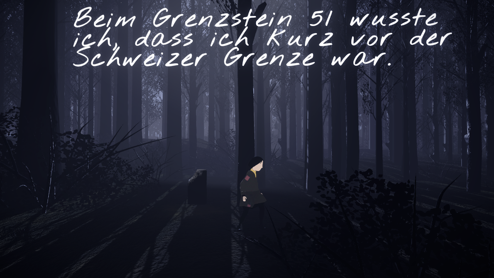

- Art des Spiels
- Digital
- Plattformen
- iPad
- Genre
- Geschichtsbasiertes Abenteuer, Story-Driven, Dialogbasiert
- Spieleranzahl
- Einzelspieler
- Empfohlenes Alter
- Zyklus 3
- Spieldauer
- noch nicht bekannt
Projekt der PHLU (Peter Gautschi)
Stand März 2024: Das Spiel ist noch nicht frei zugänglich. Eine Anmeldung für interessierte Lehrpersonen auf der Webseite als Tester:innen ist möglich.
Webseite des Projekts: https://www.whenwedisappear.com/de/edu
Kurzbeschreibung
"When We Disappear" ist ein geschichtsbasiertes, narratives Spiel, das im Jahr 1943 angesiedelt ist. Die Spielerinnen und Spieler folgen der Geschichte von Hannah, einem jungen Mädchen, das mit Hilfe der Widerstandsbewegung vor den Schrecken des Zweiten Weltkriegs flieht. Durch die Flucht quer durch Europa wird Hannah mit verschiedenen moralischen Dilemmata konfrontiert, die die Spielerinnen durch ihre Entscheidungen im Spielverlauf beeinflussen.
Besondere Merkmale
Historische Genauigkeit: Das Spiel wurde in enger Zusammenarbeit mit Historiker*innen, Wissenschaftler*innen und Forscher*innen des Lucerne Institute of History Education and Memory Culture entwickelt, um eine authentische Darstellung der Zeit zu gewährleisten.
Entscheidungsbasierte Handlung: Die Entscheidungen der Spieler*innen beeinflussen den Verlauf der Geschichte und Hannahs Schicksal, wodurch jede Spielerfahrung einzigartig wird.
Edukativer Wert: Das Spiel fördert das Nachdenken über unsere gemeinsame Vergangenheit und die geteilte Verantwortung für unsere Zukunft.
Besondere Anforderungen
Momentan noch nicht frei erhältlich
Lernpotenzial
Das Spiel bietet eine tiefgründige Möglichkeit, sich mit der Geschichte des Zweiten Weltkriegs auseinanderzusetzen und fördert das kritische Denken sowie das Bewusstsein für die Auswirkungen historischer Ereignisse. Es regt zur Reflexion über ethische Fragen und die Bedeutung von Entscheidungen in schwierigen Zeiten an.
Unterrichtsrelevanz
"When We Disappear" kann im Geschichtsunterricht genutzt werden, um die Themen Zweiter Weltkrieg, Flucht, Widerstand und die moralischen Entscheidungen in Kriegszeiten zu vertiefen. Es bietet eine interaktive Ergänzung zu traditionellen Lehrmethoden und fördert ein tieferes Verständnis für historische Kontexte.
Links und Quellen
Webseite des Entwicklers Inlusio: https://www.inlusio.com/en/whenwedisappear
Fazit
"When We Disappear" stellt eine Ergänzung für den Geschichtsunterricht dar, die es ermöglicht, Geschichte auf eine moderne und interaktive Weise zu vermitteln. Das Spiel bietet nicht nur historische Einblicke, sondern fordert auch zur Reflexion und ethischen Bewertung auf, wodurch es eine tiefgreifende Lernerfahrung schafft und das historische Bewusstsein sowie kritisches Denken fördert.